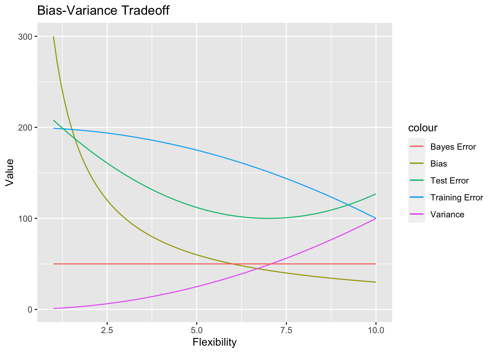
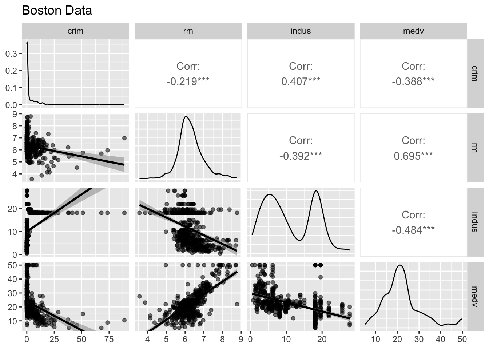
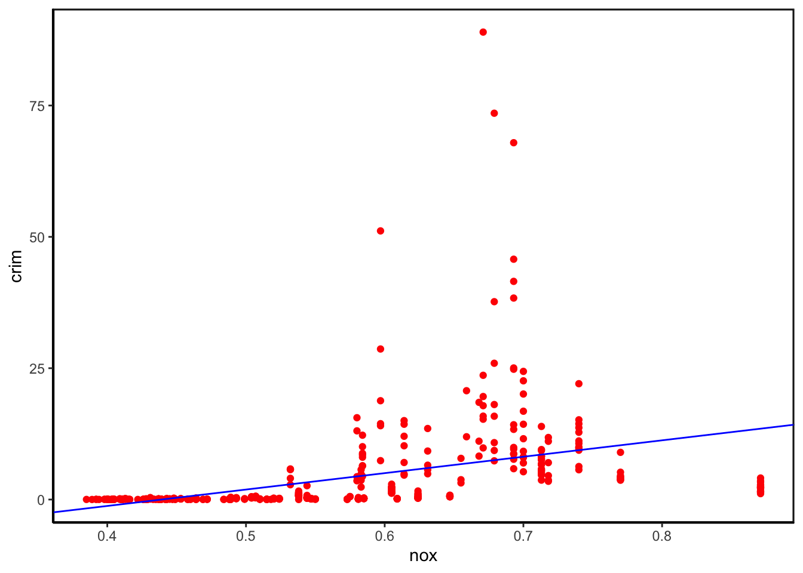
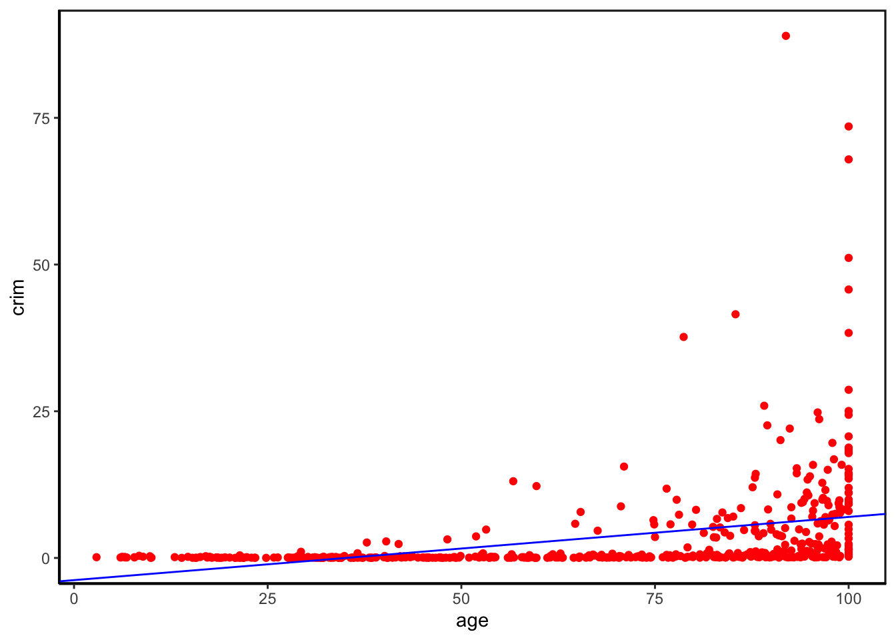
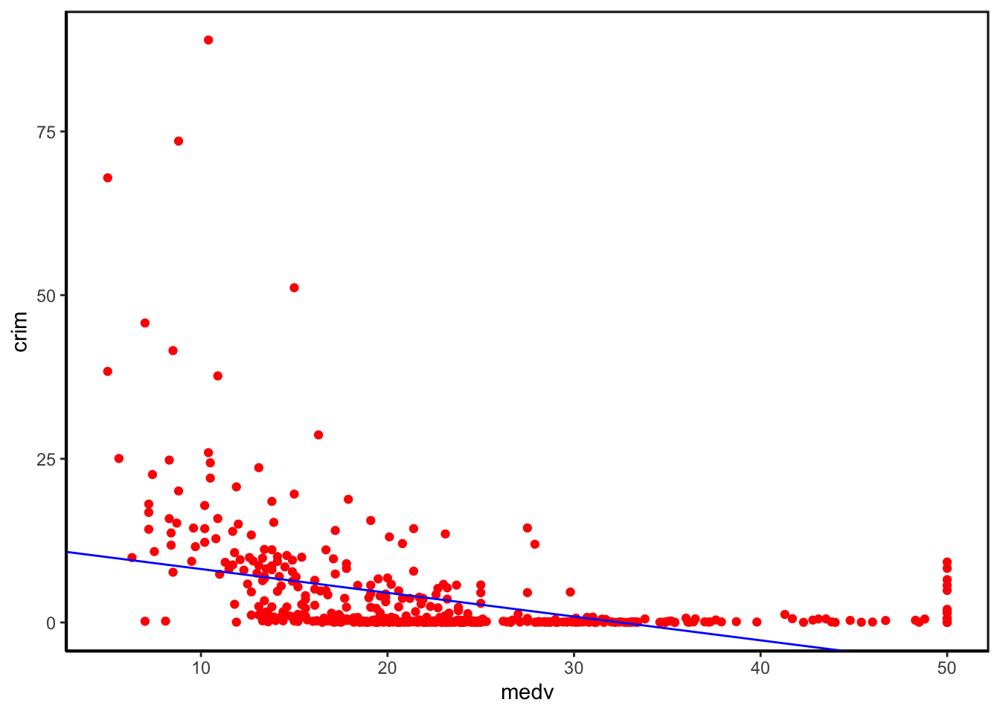
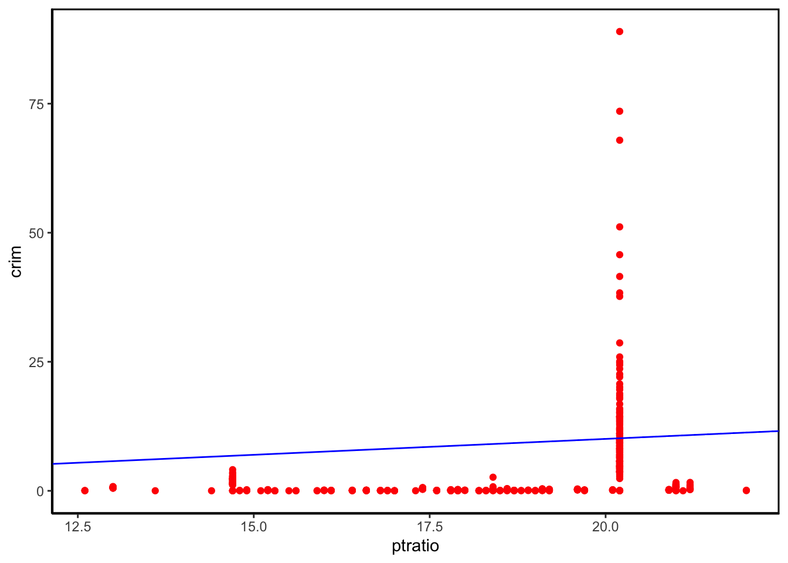
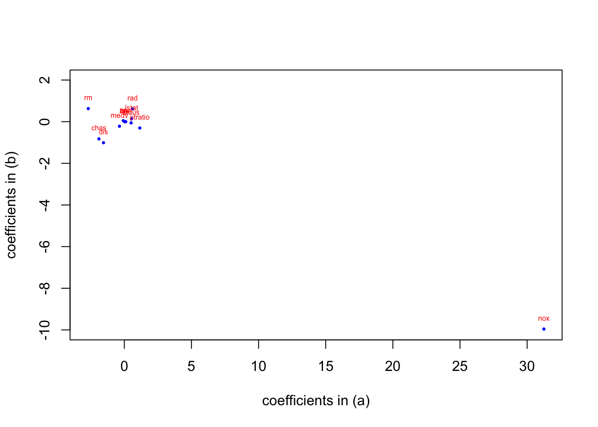

Biostat 212a Homework 1
Due Jan 23, 2024 @ 11:59PM
1 Filling gaps in lecture notes (10pts)
Consider the regression model \[ Y = f(X) + \epsilon, \] where \(\operatorname{E}(\epsilon) = 0\).
1.1 Optimal regression function
Show that the choice \[ f_{\text{opt}}(X) = \operatorname{E}(Y | X) \] minimizes the mean squared prediction error \[ \operatorname{E}\{[Y - f(X)]^2\}, \] where the expectations averages over variations in both \(X\) and \(Y\). (Hint: condition on \(X\).)
Since the mean squared prediction error can be defined as
\[ \operatorname{MSE}={E}\{[Y - f(X)]^2\}, \] we can have
\[ \begin{aligned} E[Y - f(X)|X]^2 &=E[Y - E(Y|X)+E(Y|X)-f(X)|X]^2\\ &=E[(Y-E(Y|X))^2|X]+2E[(Y-E(Y|X))(E(Y|X)-f(x))|X]+E[(E(Y|X)-f(x))^2|X].\\ \end{aligned} \]
Since \(E(Y|X)-f(x)\) is a function of \(X\), for any given \(X\), \(E(Y|X)-f(x)\) can be seen as a constant.
That means
\[ \begin{aligned} 2E[(Y-E(Y|X))(E(Y|X)-f(x))|X]&=2E[E(Y|X)-f(X)|X]E[Y-E(Y|X)|X]\\ &=2E[E(Y|X)-f(X)](E(Y|X)-E(Y|X))\\ &=0. \end{aligned} \]
So,
\[ E[Y - f(X)|X]^2 \ge E[Y-E(Y|X)|X], \]
calculate the expectations for both sides, we can have
\[ E[Y - f(X)]^2 \ge E[Y-E(Y|X)]. \]
So \(f_{\text{opt}}(X) = \operatorname{E}(Y | X)\) minimizes the mean squared prediction error.
1.2 Bias-variance trade-off
Given an estimate \(\hat f\) of \(f\), show that the test error at a \(x_0\) can be decomposed as \[ \operatorname{E}\{[y_0 - \hat f(x_0)]^2\} = \underbrace{\operatorname{Var}(\hat f(x_0)) + [\operatorname{Bias}(\hat f(x_0))]^2}_{\text{MSE of } \hat f(x_0) \text{ for estimating } f(x_0)} + \underbrace{\operatorname{Var}(\epsilon)}_{\text{irreducible}}, \] where the expectation averages over the variability in \(y_0\) and \(\hat f\).
Expand the test error \(E[y_0 - \hat f(x_0)]^2\), we can have
\[ \begin{aligned} E[y_0 - \hat f(x_0)]^2&=E[y_0^2-2y_0\hat f(x_0)+\hat f(x_0)^2]\\ &=E[y_0^2]+E[\hat f(x_0)^2]-2E[y_0\hat f(x_0)]. \end{aligned} \]
We model \(y=f+\epsilon\), then we have
\[ \begin{aligned} E[y_0^2]&=E[(f+\epsilon)^2]\\ &=E[f^2]+2E[f\epsilon]+E[\epsilon^2] \\ &=f^2+2fE[\epsilon]+E[\epsilon^2] \qquad since\ f \ does\ not\ depend \ on \ the \ data\\ &=f^2+2f\cdot0+Var(\epsilon).\qquad since\ E[\epsilon]=0 \end{aligned} \]
And since \(Var[X]=E[(X-E[X])^2]=E[X^2]-E[X]^2\), we have
\[ E[\hat f^2]=Var(\hat f)+E[\hat f^2]. \]
For \(E[y_0\hat f]\), we have
\[ \begin{aligned} E[y_0\hat f]&=E[(f+\epsilon)\hat f]\\ &=E[f\hat f]+E[\epsilon\hat f]\\ &=E[f\hat f]+E[\epsilon]E[\hat f] \qquad since\ \hat f \ and \ \epsilon\ are \ independent \\ &=fE[\hat f]. \qquad \ sinceE[\epsilon]=0 \end{aligned} \]
Finally, we have the sum of the 3 parts,
\[ \begin{aligned} E[y_0 - \hat f(x_0)]^2 &= f(x_0)^2+Var(\epsilon)+Var(\hat f(x-0))+E[\hat f(x_0)^2]-2f(x_0)E[\hat f(x_0)]\\ &=(f(x_0)-E[\hat f(x_0)])^2+Var(\epsilon)+Var(\hat f(x_0)), \end{aligned} \]
the proposition is proved.
2 ISL Exercise 2.4.3 (10pts)
We now revisit the bias-variance decomposition.
(a) Provide a sketch of typical (squared) bias, variance, training error, test error, and Bayes (or irreducible) error curves, on a single plot, as we go from less flexible statistical learning methods towards more flexible approaches. The x-axis should represent the amount of flexibility in the method, and the y-axis should represent the values for each curve. There should be five curves. Make sure to label each one.
To draw multiple lines, we consider use ggplot() for the task.
(b) Explain why each of the five curves has the shape displayed in part (a).
Bayes error:
Bayes error is a constant value regardless of flexibility, as it is the irreducible error that represents the noise and uncertainty in the data that is unable to eliminate.
Bias:
When the model flexibility is low, the data patterns might be oversimplified, so the bias is high. It will decreases as the flexibility increases.
Test error:
Test error decreases as flexibility increases at the beginning, since the ability of the model to capture the data patterns is improved. However, when flexibility keeps on increasing, the model will meet the “overfitting” problem, which can make the model unable to obtain good outcomes from new input data.
Training error:
Training error decreases as model flexibility increases, since the models with higher flexibility can fit the training data better, decreasing the training error.
Variance:
Variance tends to increase with the model flexibility increases, since more flexible models are able to fit the training data more precisely, the complexity become higher, leading to higher variance.
3 ISL Exercise 2.4.4 (10pts)
- You will now think of some real-life applications for statistical learning.
- Describe three real-life applications in which classification might be useful. Describe the response, as well as the predictors. Is the goal of each application inference or prediction? Explain your answer.
(1) One example of classification in real-life is snoring detection, which is an important method for the diagnosis of sleeping apnea. In this problem, the predictors are the sound events in the audio recording of night sleeping, while the response is whether the sound events are snoring(rather than noise). For this kind of snoring detection, the goal is inference (of whether the sound events are snoring)
(2) Another example is the application of auto-driving. The auto-driving system generally has one part to do real-time classification of the detected obstacles. In this problem, the predictors can be either the 2D images or 3D point clouds of the obstacles and the response is the type of the obstacles. For this kind of task, the goal is inference (of what’s the type of the detected obstacles.)
(3) There’ s one more example, the prediction of river flooding. Specifically, it use the previous data of flooding events, including meteorological data, hydrological data, topography and soil type, as training data, to train a model that can predict whether there will be a flooding in the river. In this case, the predictors are the features (bold font listed above) of the rivers to be predicted, while the response is whether there will be flooding. Obviously, the goal of this application is prediction.
- Describe three real-life applications in which regression might be useful. Describe the response, as well as the predictors. Is the goal of each application inference or prediction? Explain your answer.
(1) One example of regression in real-life is the prediction of stock price. In this problem, the predictors are the macroeconomic factors (for example, interest rates and inflation rates), while the response is the prediction of the stock price. For this kind of regression application, the goal is prediction.
(2) Another example is the application of house price forecast. In this problem, the predictors can be the characteristics of the house and facility and the response is the prediction of the house price. For this kind of regression, the goal is prediction.
(3) There’ s one more example, the prediction of products sales. In this case, the predictors includes the product characteristics (brand, pricing) and market competitive trends, while the response is the prediction of product sales. Obviously, the goal of this application is prediction.
- Describe three real-life applications in which cluster analysis might be useful.
(1) One example of cluster analysis in real-life is to segment patients. In healthcare, we can use cluster analysis to segment paitients based on various health-related features such as medical history, vital signs, and lifestyle factors.
(2) Another example is the application of grouping online-shoping customers. In this problem, online shopping platform can understand its customer based on their purchase history, browsing behavior, and demographic information by applying cluster analysis.
(3) There’ s one more example, the educational course recommendation. The online education platform can recommend courses to users based on their learning preferences and behavior. Cluster analysis is used to group users with similar learning patterns.
4 ISL Exercise 2.4.10 (30pts)
This exercise involves the Boston housing data set.
To begin, load in the Boston data set. The Boston data set is part of the ISLR2 library.
> library(ISLR2)
Now the data set is contained in the object Boston.
> Boston
Read about the data set:
> ?Boston
How many rows are in this data set? How many columns? What do the rows and columns represent?
we can load the Boston data as follows:
library(tidyverse)
Boston <- read_csv("https://raw.githubusercontent.com/ucla-biostat-212a/2024winter/master/slides/data/Boston.csv", col_select = -1) %>%
print(width = Inf)# A tibble: 506 × 13
crim zn indus chas nox rm age dis rad tax ptratio lstat
<dbl> <dbl> <dbl> <dbl> <dbl> <dbl> <dbl> <dbl> <dbl> <dbl> <dbl> <dbl>
1 0.00632 18 2.31 0 0.538 6.58 65.2 4.09 1 296 15.3 4.98
2 0.0273 0 7.07 0 0.469 6.42 78.9 4.97 2 242 17.8 9.14
3 0.0273 0 7.07 0 0.469 7.18 61.1 4.97 2 242 17.8 4.03
4 0.0324 0 2.18 0 0.458 7.00 45.8 6.06 3 222 18.7 2.94
5 0.0690 0 2.18 0 0.458 7.15 54.2 6.06 3 222 18.7 5.33
6 0.0298 0 2.18 0 0.458 6.43 58.7 6.06 3 222 18.7 5.21
7 0.0883 12.5 7.87 0 0.524 6.01 66.6 5.56 5 311 15.2 12.4
8 0.145 12.5 7.87 0 0.524 6.17 96.1 5.95 5 311 15.2 19.2
9 0.211 12.5 7.87 0 0.524 5.63 100 6.08 5 311 15.2 29.9
10 0.170 12.5 7.87 0 0.524 6.00 85.9 6.59 5 311 15.2 17.1
medv
<dbl>
1 24
2 21.6
3 34.7
4 33.4
5 36.2
6 28.7
7 22.9
8 27.1
9 16.5
10 18.9
# ℹ 496 more rowsAs we can see, there are 506 rows and 13 columns (14 columns if the first column of serial number included ). By using the >?Boston command, we can know from the document that each row represents a suburbs of Boston and each column stands for a feature of the suburb. Specifically, each column is explained as follows:
crim-
per capita crime rate by town.
zn-
proportion of residential land zoned for lots over 25,000 sq.ft.
indus-
proportion of non-retail business acres per town.
chas-
Charles River dummy variable (= 1 if tract bounds river; 0 otherwise).
nox-
nitrogen oxides concentration (parts per 10 million).
rm-
average number of rooms per dwelling.
age-
proportion of owner-occupied units built prior to 1940.
dis-
weighted mean of distances to five Boston employment centres.
rad-
index of accessibility to radial highways.
tax-
full-value property-tax rate per $10,000.
ptratio-
pupil-teacher ratio by town.
lstat-
lower status of the population (percent).
medv-
median value of owner-occupied homes in $1000s.
- Make some pairwise scatterplots of the predictors (columns) in this data set. Describe your findings.
To draw pairwise scatterplots, we choose some of the columns as example:
library(GGally)
ggpairs(
data = Boston[, c("crim", "rm", "indus", "medv")],
mapping = aes(alpha = 0.25),
lower = list(continuous = "smooth")
) +
labs(title = "Boston Data") 
As is shown on the figure, the linear relationship between ‘rm’ and ‘medv’ is high, while the one between ‘rm’ and ‘crim’ is low.
- Are any of the predictors associated with per capita crime rate? If so, explain the relationship.
Yes, to find out which of them are associated with per capita crime rate, we can calculate the correlation coefficients between ‘crim’ and other predictors.
columns <- names(Boston)
correlation <- cor(Boston[, "crim"], Boston[, columns[columns!="crim"]])
print(correlation) zn indus chas nox rm age dis
crim -0.2004692 0.4065834 -0.05589158 0.4209717 -0.2192467 0.3527343 -0.3796701
rad tax ptratio lstat medv
crim 0.6255051 0.5827643 0.2899456 0.4556215 -0.3883046From the results, we can see that ‘rad’(index of accessibility to radial highways), ‘tax’ (full-value property-tax rate per $10,000), ‘lstat’ (lower status of the population), ‘nox’ (nitrogen oxides concentration) and ‘indus’ (proportion of non-retail business acres per town) may associated with per capita crime rate.
- Do any of the census tracts of Boston appear to have particularly high crime rates? Tax rates? Pupil-teacher ratios? Comment on the range of each predictor.
range(Boston$crim)[1] 0.00632 88.97620nrow(Boston[Boston$crim>60,])[1] 3We can see the crime rates range from 0.00632% to 88.97620%, if we set higher than 60% as particularly high, there are 3 observations.
range(Boston$tax)[1] 187 711nrow(Boston[Boston$tax>670,])[1] 5We can see the tax rates range from 187 to 711, if we set higher than 670 as particularly high, there are 5 observations.
range(Boston$ptratio)[1] 12.6 22.0nrow(Boston[Boston$ptratio>21,])[1] 18We can see the pupil-teacher ratios range from 12.6 to 22.0, if we set higher than 21 as particularly high, there are 18 observations.
- How many of the census tracts in this data set bound the Charles river?
nrow(Boston[Boston$chas==1,])[1] 35There are 35 observations bound Charles River.
- What is the median pupil-teacher ratio among the towns in this data set?
median(Boston$ptratio)[1] 19.05the median pupil-teacher ratio among the towns in this data set is 19.05.
- Which census tract of Boston has lowest median value of owner- occupied homes? What are the values of the other predictors for that census tract, and how do those values compare to the overall ranges for those predictors? Comment on your findings.
min(Boston$medv)[1] 5print(Boston[Boston$medv==min(Boston$medv),])# A tibble: 2 × 13
crim zn indus chas nox rm age dis rad tax ptratio lstat
<dbl> <dbl> <dbl> <dbl> <dbl> <dbl> <dbl> <dbl> <dbl> <dbl> <dbl> <dbl>
1 38.4 0 18.1 0 0.693 5.45 100 1.49 24 666 20.2 30.6
2 67.9 0 18.1 0 0.693 5.68 100 1.43 24 666 20.2 23.0
# ℹ 1 more variable: medv <dbl>The two with median value of owner- occupied homes =5 (1000$) are the lowest, the value of other predictors of the two tracts are listed above. We can find that many other predictors in those two tracts are relatively high, such as tax rates, pupil-teacher ratio, proportion of owner-occupied units built prior to 1940, and so on, which reveals the poverty of these two tracts.
- In this data set, how many of the census tracts average more than seven rooms per dwelling? More than eight rooms per dwelling? Comment on the census tracts that average more than eight rooms per dwelling.
nrow(Boston[Boston$rm>7,])[1] 64nrow(Boston[Boston$rm>8,])[1] 13plus8 <- Boston[Boston$rm>8,]
summary(plus8) crim zn indus chas
Min. :0.02009 Min. : 0.00 Min. : 2.680 Min. :0.0000
1st Qu.:0.33147 1st Qu.: 0.00 1st Qu.: 3.970 1st Qu.:0.0000
Median :0.52014 Median : 0.00 Median : 6.200 Median :0.0000
Mean :0.71879 Mean :13.62 Mean : 7.078 Mean :0.1538
3rd Qu.:0.57834 3rd Qu.:20.00 3rd Qu.: 6.200 3rd Qu.:0.0000
Max. :3.47428 Max. :95.00 Max. :19.580 Max. :1.0000
nox rm age dis
Min. :0.4161 Min. :8.034 Min. : 8.40 Min. :1.801
1st Qu.:0.5040 1st Qu.:8.247 1st Qu.:70.40 1st Qu.:2.288
Median :0.5070 Median :8.297 Median :78.30 Median :2.894
Mean :0.5392 Mean :8.349 Mean :71.54 Mean :3.430
3rd Qu.:0.6050 3rd Qu.:8.398 3rd Qu.:86.50 3rd Qu.:3.652
Max. :0.7180 Max. :8.780 Max. :93.90 Max. :8.907
rad tax ptratio lstat medv
Min. : 2.000 Min. :224.0 Min. :13.00 Min. :2.47 Min. :21.9
1st Qu.: 5.000 1st Qu.:264.0 1st Qu.:14.70 1st Qu.:3.32 1st Qu.:41.7
Median : 7.000 Median :307.0 Median :17.40 Median :4.14 Median :48.3
Mean : 7.462 Mean :325.1 Mean :16.36 Mean :4.31 Mean :44.2
3rd Qu.: 8.000 3rd Qu.:307.0 3rd Qu.:17.40 3rd Qu.:5.12 3rd Qu.:50.0
Max. :24.000 Max. :666.0 Max. :20.20 Max. :7.44 Max. :50.0 From the results, we can see that there are 64 tracts average more than seven rooms per dwelling, and 13 more than eight rooms per dwelling.
Extract the 13 tracts, and do summary on it, we can see that they have low crime rates, low tax rates(for at least 75% of them) and low ptratio (for at least 75% of them).
5 ISL Exercise 3.7.3 (12pts)
Suppose we have a data set with five predictors, \(X_1\) = GPA, \(X_2\) = IQ, \(X_3\) = Level (1 for College and 0 for High School), \(X_4\) = Interaction between GPA and IQ, and \(X_5\) = Interaction between GPA and Level. The response is starting salary after graduation (in thousands of dollars). Suppose we use least squares to fit the model, and get \(\hat β_0\) = 50,\(\hat β_1\) = 20, \(\hat β_2\) = 0.07,\(\hat β_3\) = 35,\(\hat β_4\) = 0.01,\(\hat β_5\) = −10.
(a) Which answer is correct, and why?
i. For a fixed value of IQ and GPA, high school graduates earn more, on average, than college graduates.
ii. For a fixed value of IQ and GPA, college graduates earn more, on average, than high school graduates.
iii. For a fixed value of IQ and GPA, high school graduates earn more, on average, than college graduates provided that the GPA is high enough.
iv. For a fixed value of IQ and GPA, college graduates earn more, on average, than high school graduates provided that the GPA is high enough.
The formula of can be written as follow:
\[ Y=\hat β_0+\hat β_1 \cdot X_1+\hat β_2 \cdot X_2+\hat β_3 \cdot X_3+\hat β_4 \cdot X_4+\hat β_5 \cdot X_5. \] Set \(Y_1\) as the high school graduates salary, and \(Y_2\) as the college graduates salary, substitute \(\hat β_i\) and \(X_3\) into the formula. For fixed value of IQ and GPA we can have:
\[ Y_2-Y_1=\hat β_3 +\hat β_5 \cdot X_1=35-10X_1. \]
Apparently when \(X_1\) is high enough, \(Y_2-Y_1\) will less than 0.
So, iii. For a fixed value of IQ and GPA, high school graduates earn more, on average, than college graduates provided that the GPA is high enough is correct.
(b) Predict the salary of a college graduate with IQ of 110 and a GPA of 4.0.
Simply substitute the values into the formula in (a), we can have the response of 129.4, so the predicted salary is 129.4 (in thousands of dollars).
(c) True or false: Since the coefficient for the GPA/IQ interaction term is very small, there is very little evidence of an interaction effect. Justify your answer.
The statment is false. The size of the coefficient alone does not determine the evidence of an interaction effect. The significance of the interaction effect should be obtained from the p-value of the coefficient of the GPA/IQ interaction.
If the p-value is small (generally smaller than 0.05), it suggests that the coefficient is significantly different from zero, proves the interaction effect, vice versa.
6 ISL Exercise 3.7.15 (20pts)
This problem involves the Boston data set, which we saw in the lab for this chapter. We will now try to predict per capita crime rate using the other variables in this data set. In other words, per capita crime rate is the response, and the other variables are the predictors.
- For each predictor, fit a simple linear regression model to predict the response. Describe your results. In which of the models is there a statistically significant association between the predictor and the response? Create some plots to back up your assertions.
library(tidyverse)
Boston <- read_csv("https://raw.githubusercontent.com/ucla-biostat-212a/2024winter/master/slides/data/Boston.csv", col_select = -1, show_col_types = FALSE)
predictors <- names(Boston)[names(Boston) != 'crim']
simple_models <- list()
for (predictor in predictors) {
formula <- as.formula(paste('crim', "~", predictor))
model <- lm(formula, data = Boston)
simple_models[[predictor]] <- model
}
for (i in seq_along(simple_models)) {
predictor_name <- names(simple_models)[i]
cat("Regression Equation for", predictor_name, ":\n")
print(summary(simple_models[[i]]))
cat("\n")
}Regression Equation for zn :
Call:
lm(formula = formula, data = Boston)
Residuals:
Min 1Q Median 3Q Max
-4.429 -4.222 -2.620 1.250 84.523
Coefficients:
Estimate Std. Error t value Pr(>|t|)
(Intercept) 4.45369 0.41722 10.675 < 2e-16 ***
zn -0.07393 0.01609 -4.594 5.51e-06 ***
---
Signif. codes: 0 '***' 0.001 '**' 0.01 '*' 0.05 '.' 0.1 ' ' 1
Residual standard error: 8.435 on 504 degrees of freedom
Multiple R-squared: 0.04019, Adjusted R-squared: 0.03828
F-statistic: 21.1 on 1 and 504 DF, p-value: 5.506e-06
Regression Equation for indus :
Call:
lm(formula = formula, data = Boston)
Residuals:
Min 1Q Median 3Q Max
-11.972 -2.698 -0.736 0.712 81.813
Coefficients:
Estimate Std. Error t value Pr(>|t|)
(Intercept) -2.06374 0.66723 -3.093 0.00209 **
indus 0.50978 0.05102 9.991 < 2e-16 ***
---
Signif. codes: 0 '***' 0.001 '**' 0.01 '*' 0.05 '.' 0.1 ' ' 1
Residual standard error: 7.866 on 504 degrees of freedom
Multiple R-squared: 0.1653, Adjusted R-squared: 0.1637
F-statistic: 99.82 on 1 and 504 DF, p-value: < 2.2e-16
Regression Equation for chas :
Call:
lm(formula = formula, data = Boston)
Residuals:
Min 1Q Median 3Q Max
-3.738 -3.661 -3.435 0.018 85.232
Coefficients:
Estimate Std. Error t value Pr(>|t|)
(Intercept) 3.7444 0.3961 9.453 <2e-16 ***
chas -1.8928 1.5061 -1.257 0.209
---
Signif. codes: 0 '***' 0.001 '**' 0.01 '*' 0.05 '.' 0.1 ' ' 1
Residual standard error: 8.597 on 504 degrees of freedom
Multiple R-squared: 0.003124, Adjusted R-squared: 0.001146
F-statistic: 1.579 on 1 and 504 DF, p-value: 0.2094
Regression Equation for nox :
Call:
lm(formula = formula, data = Boston)
Residuals:
Min 1Q Median 3Q Max
-12.371 -2.738 -0.974 0.559 81.728
Coefficients:
Estimate Std. Error t value Pr(>|t|)
(Intercept) -13.720 1.699 -8.073 5.08e-15 ***
nox 31.249 2.999 10.419 < 2e-16 ***
---
Signif. codes: 0 '***' 0.001 '**' 0.01 '*' 0.05 '.' 0.1 ' ' 1
Residual standard error: 7.81 on 504 degrees of freedom
Multiple R-squared: 0.1772, Adjusted R-squared: 0.1756
F-statistic: 108.6 on 1 and 504 DF, p-value: < 2.2e-16
Regression Equation for rm :
Call:
lm(formula = formula, data = Boston)
Residuals:
Min 1Q Median 3Q Max
-6.604 -3.952 -2.654 0.989 87.197
Coefficients:
Estimate Std. Error t value Pr(>|t|)
(Intercept) 20.482 3.365 6.088 2.27e-09 ***
rm -2.684 0.532 -5.045 6.35e-07 ***
---
Signif. codes: 0 '***' 0.001 '**' 0.01 '*' 0.05 '.' 0.1 ' ' 1
Residual standard error: 8.401 on 504 degrees of freedom
Multiple R-squared: 0.04807, Adjusted R-squared: 0.04618
F-statistic: 25.45 on 1 and 504 DF, p-value: 6.347e-07
Regression Equation for age :
Call:
lm(formula = formula, data = Boston)
Residuals:
Min 1Q Median 3Q Max
-6.789 -4.257 -1.230 1.527 82.849
Coefficients:
Estimate Std. Error t value Pr(>|t|)
(Intercept) -3.77791 0.94398 -4.002 7.22e-05 ***
age 0.10779 0.01274 8.463 2.85e-16 ***
---
Signif. codes: 0 '***' 0.001 '**' 0.01 '*' 0.05 '.' 0.1 ' ' 1
Residual standard error: 8.057 on 504 degrees of freedom
Multiple R-squared: 0.1244, Adjusted R-squared: 0.1227
F-statistic: 71.62 on 1 and 504 DF, p-value: 2.855e-16
Regression Equation for dis :
Call:
lm(formula = formula, data = Boston)
Residuals:
Min 1Q Median 3Q Max
-6.708 -4.134 -1.527 1.516 81.674
Coefficients:
Estimate Std. Error t value Pr(>|t|)
(Intercept) 9.4993 0.7304 13.006 <2e-16 ***
dis -1.5509 0.1683 -9.213 <2e-16 ***
---
Signif. codes: 0 '***' 0.001 '**' 0.01 '*' 0.05 '.' 0.1 ' ' 1
Residual standard error: 7.965 on 504 degrees of freedom
Multiple R-squared: 0.1441, Adjusted R-squared: 0.1425
F-statistic: 84.89 on 1 and 504 DF, p-value: < 2.2e-16
Regression Equation for rad :
Call:
lm(formula = formula, data = Boston)
Residuals:
Min 1Q Median 3Q Max
-10.164 -1.381 -0.141 0.660 76.433
Coefficients:
Estimate Std. Error t value Pr(>|t|)
(Intercept) -2.28716 0.44348 -5.157 3.61e-07 ***
rad 0.61791 0.03433 17.998 < 2e-16 ***
---
Signif. codes: 0 '***' 0.001 '**' 0.01 '*' 0.05 '.' 0.1 ' ' 1
Residual standard error: 6.718 on 504 degrees of freedom
Multiple R-squared: 0.3913, Adjusted R-squared: 0.39
F-statistic: 323.9 on 1 and 504 DF, p-value: < 2.2e-16
Regression Equation for tax :
Call:
lm(formula = formula, data = Boston)
Residuals:
Min 1Q Median 3Q Max
-12.513 -2.738 -0.194 1.065 77.696
Coefficients:
Estimate Std. Error t value Pr(>|t|)
(Intercept) -8.528369 0.815809 -10.45 <2e-16 ***
tax 0.029742 0.001847 16.10 <2e-16 ***
---
Signif. codes: 0 '***' 0.001 '**' 0.01 '*' 0.05 '.' 0.1 ' ' 1
Residual standard error: 6.997 on 504 degrees of freedom
Multiple R-squared: 0.3396, Adjusted R-squared: 0.3383
F-statistic: 259.2 on 1 and 504 DF, p-value: < 2.2e-16
Regression Equation for ptratio :
Call:
lm(formula = formula, data = Boston)
Residuals:
Min 1Q Median 3Q Max
-7.654 -3.985 -1.912 1.825 83.353
Coefficients:
Estimate Std. Error t value Pr(>|t|)
(Intercept) -17.6469 3.1473 -5.607 3.40e-08 ***
ptratio 1.1520 0.1694 6.801 2.94e-11 ***
---
Signif. codes: 0 '***' 0.001 '**' 0.01 '*' 0.05 '.' 0.1 ' ' 1
Residual standard error: 8.24 on 504 degrees of freedom
Multiple R-squared: 0.08407, Adjusted R-squared: 0.08225
F-statistic: 46.26 on 1 and 504 DF, p-value: 2.943e-11
Regression Equation for lstat :
Call:
lm(formula = formula, data = Boston)
Residuals:
Min 1Q Median 3Q Max
-13.925 -2.822 -0.664 1.079 82.862
Coefficients:
Estimate Std. Error t value Pr(>|t|)
(Intercept) -3.33054 0.69376 -4.801 2.09e-06 ***
lstat 0.54880 0.04776 11.491 < 2e-16 ***
---
Signif. codes: 0 '***' 0.001 '**' 0.01 '*' 0.05 '.' 0.1 ' ' 1
Residual standard error: 7.664 on 504 degrees of freedom
Multiple R-squared: 0.2076, Adjusted R-squared: 0.206
F-statistic: 132 on 1 and 504 DF, p-value: < 2.2e-16
Regression Equation for medv :
Call:
lm(formula = formula, data = Boston)
Residuals:
Min 1Q Median 3Q Max
-9.071 -4.022 -2.343 1.298 80.957
Coefficients:
Estimate Std. Error t value Pr(>|t|)
(Intercept) 11.79654 0.93419 12.63 <2e-16 ***
medv -0.36316 0.03839 -9.46 <2e-16 ***
---
Signif. codes: 0 '***' 0.001 '**' 0.01 '*' 0.05 '.' 0.1 ' ' 1
Residual standard error: 7.934 on 504 degrees of freedom
Multiple R-squared: 0.1508, Adjusted R-squared: 0.1491
F-statistic: 89.49 on 1 and 504 DF, p-value: < 2.2e-16As we can see from the results, only the ‘chas’ isn’t statistically significant associated with ‘crim’, since it has high p-value.
To support my conclusion, we draw some plots as examples.
library(ggplot2)
ggplot(Boston, aes(x = nox, y = crim)) +
geom_point( color = "red") +
geom_abline(intercept = coefficients(simple_models[[4]])[1], slope = coefficients(simple_models[[4]])[2], color = "blue") +
xlab("nox") +
ylab("crim") +
theme_bw() +
theme(panel.background = element_rect(colour = "black", linewidth = 1),
panel.grid.major = element_blank(),
panel.grid.minor = element_blank(),
axis.line = element_line(colour = "black"))
ggplot(Boston, aes(x = age, y = crim)) +
geom_point( color = "red") +
geom_abline(intercept = coefficients(simple_models[[6]])[1], slope = coefficients(simple_models[[6]])[2], color = "blue") +
xlab("age") +
ylab("crim") +
theme_bw() +
theme(panel.background = element_rect(colour = "black", linewidth = 1),
panel.grid.major = element_blank(),
panel.grid.minor = element_blank(),
axis.line = element_line(colour = "black"))
ggplot(Boston, aes(x = medv, y = crim)) +
geom_point( color = "red") +
geom_abline(intercept = coefficients(simple_models[[12]])[1], slope = coefficients(simple_models[[12]])[2], color = "blue") +
xlab("medv") +
ylab("crim") +
theme_bw() +
theme(panel.background = element_rect(colour = "black", linewidth = 1),
panel.grid.major = element_blank(),
panel.grid.minor = element_blank(),
axis.line = element_line(colour = "black"))
ggplot(Boston, aes(x = ptratio, y = crim)) +
geom_point( color = "red") +
geom_abline(intercept = coefficients(simple_models[[8]])[1], slope = coefficients(simple_models[[8]])[2], color = "blue") +
xlab("ptratio") +
ylab("crim") +
theme_bw() +
theme(panel.background = element_rect(colour = "black", linewidth = 1),
panel.grid.major = element_blank(),
panel.grid.minor = element_blank(),
axis.line = element_line(colour = "black"))
- Fit a multiple regression model to predict the response using all of the predictors. Describe your results. For which predictors can we reject the null hypothesis \(H_0:\beta_j=0\)?
multiple_model <- lm(crim ~ ., data = Boston)
summary(multiple_model)
Call:
lm(formula = crim ~ ., data = Boston)
Residuals:
Min 1Q Median 3Q Max
-8.534 -2.248 -0.348 1.087 73.923
Coefficients:
Estimate Std. Error t value Pr(>|t|)
(Intercept) 13.7783938 7.0818258 1.946 0.052271 .
zn 0.0457100 0.0187903 2.433 0.015344 *
indus -0.0583501 0.0836351 -0.698 0.485709
chas -0.8253776 1.1833963 -0.697 0.485841
nox -9.9575865 5.2898242 -1.882 0.060370 .
rm 0.6289107 0.6070924 1.036 0.300738
age -0.0008483 0.0179482 -0.047 0.962323
dis -1.0122467 0.2824676 -3.584 0.000373 ***
rad 0.6124653 0.0875358 6.997 8.59e-12 ***
tax -0.0037756 0.0051723 -0.730 0.465757
ptratio -0.3040728 0.1863598 -1.632 0.103393
lstat 0.1388006 0.0757213 1.833 0.067398 .
medv -0.2200564 0.0598240 -3.678 0.000261 ***
---
Signif. codes: 0 '***' 0.001 '**' 0.01 '*' 0.05 '.' 0.1 ' ' 1
Residual standard error: 6.46 on 493 degrees of freedom
Multiple R-squared: 0.4493, Adjusted R-squared: 0.4359
F-statistic: 33.52 on 12 and 493 DF, p-value: < 2.2e-16The model provides insights into the relationship between various predictors and the crime rate in the Boston dataset. Predictors like weighted mean of distances to five Boston employment centres (dis), index of accessibility to radial highways (rad), median value of owner-occupied homes in $1000s (medv) appear to play significant roles in influencing the crime rate. The overall model is statistically significant and explains a substantial portion of the variance in the crime rate.
If we use \(\alpha=0.05\) ,then ‘zn’, ‘dis’, ‘rad’, ‘medv’ can reject the null hypothesis \(H_0:\beta_j=0\).
- How do your results from (a) compare to your results from (b)? Create a plot displaying the univariate regression coefficients from (a) on the x-axis, and the multiple regression coefficients from (b) on the y-axis. That is, each predictor is displayed as a single point in the plot. Its coefficient in a simple linear regres- sion model is shown on the x-axis, and its coefficient estimate in the multiple linear regression model is shown on the y-axis.
I think the one from (b) is much more better and reliable. Since the results from (a) show that almost every predictors are statistically significant associated with ‘crim’.
a_values<-vector()
b_values<-vector()
for (i in c(1:12)) {
a_values[i]<-simple_models[[i]]$coefficients[2]
b_values[i]<-multiple_model$coefficients[i+1]
}
zeroes<-rep(0,12)
plot(a_values,b_values,pch=16,col="blue",cex=0.5,xlab="coefficients in (a)", ylab="coefficients in (b)" ,ylim=c(-10,2))
text(a_values,b_values,labels=names(Boston)[2:13],pos=3,col="red",cex=0.5)
- Is there evidence of non-linear association between any of the predictors and the response? To answer this question, for each predictor X, fit a model of the form
\[ Y=\hat β_0+\hat β_1 \cdot X_1+\hat β_2 \cdot X_2^2+\hat β_3 \cdot X_3^3. \]
To create functions that follow the given form, we shall apply the poly() in lm().
library(tidyverse)
predictors <- names(Boston)[names(Boston) != 'crim']
nonlinear_models <- list()
# poly function will have inevitable bug in loop, so I didn't apply loops
model <- lm(crim~poly(Boston$zn,3), data = Boston)
nonlinear_models[[1]] <- model
model <- lm(crim~poly(Boston$indus,3), data = Boston)
nonlinear_models[[2]] <- model
model <- lm(crim~poly(Boston$nox,3), data = Boston)
nonlinear_models[[3]] <- model
model <- lm(crim~poly(Boston$rm,3), data = Boston)
nonlinear_models[[4]] <- model
model <- lm(crim~poly(Boston$age,3), data = Boston)
nonlinear_models[[5]] <- model
model <- lm(crim~poly(Boston$dis,3), data = Boston)
nonlinear_models[[6]] <- model
model <- lm(crim~poly(Boston$rad,3), data = Boston)
nonlinear_models[[7]] <- model
model <- lm(crim~poly(Boston$tax,3), data = Boston)
nonlinear_models[[8]] <- model
model <- lm(crim~poly(Boston$ptratio,3), data = Boston)
nonlinear_models[[9]] <- model
model <- lm(crim~poly(Boston$lstat,3), data = Boston)
nonlinear_models[[10]] <- model
model <- lm(crim~poly(Boston$medv,3), data = Boston)
nonlinear_models[[11]] <- model
for (i in seq_along(nonlinear_models)) {
predictor_name <- names(nonlinear_models)[i]
cat("Regression Equation for", predictor_name, ":\n")
print(summary(nonlinear_models[[i]]))
cat("\n")
}Regression Equation for :
Call:
lm(formula = crim ~ poly(Boston$zn, 3), data = Boston)
Residuals:
Min 1Q Median 3Q Max
-4.821 -4.614 -1.294 0.473 84.130
Coefficients:
Estimate Std. Error t value Pr(>|t|)
(Intercept) 3.6135 0.3722 9.709 < 2e-16 ***
poly(Boston$zn, 3)1 -38.7498 8.3722 -4.628 4.7e-06 ***
poly(Boston$zn, 3)2 23.9398 8.3722 2.859 0.00442 **
poly(Boston$zn, 3)3 -10.0719 8.3722 -1.203 0.22954
---
Signif. codes: 0 '***' 0.001 '**' 0.01 '*' 0.05 '.' 0.1 ' ' 1
Residual standard error: 8.372 on 502 degrees of freedom
Multiple R-squared: 0.05824, Adjusted R-squared: 0.05261
F-statistic: 10.35 on 3 and 502 DF, p-value: 1.281e-06
Regression Equation for :
Call:
lm(formula = crim ~ poly(Boston$indus, 3), data = Boston)
Residuals:
Min 1Q Median 3Q Max
-8.278 -2.514 0.054 0.764 79.713
Coefficients:
Estimate Std. Error t value Pr(>|t|)
(Intercept) 3.614 0.330 10.950 < 2e-16 ***
poly(Boston$indus, 3)1 78.591 7.423 10.587 < 2e-16 ***
poly(Boston$indus, 3)2 -24.395 7.423 -3.286 0.00109 **
poly(Boston$indus, 3)3 -54.130 7.423 -7.292 1.2e-12 ***
---
Signif. codes: 0 '***' 0.001 '**' 0.01 '*' 0.05 '.' 0.1 ' ' 1
Residual standard error: 7.423 on 502 degrees of freedom
Multiple R-squared: 0.2597, Adjusted R-squared: 0.2552
F-statistic: 58.69 on 3 and 502 DF, p-value: < 2.2e-16
Regression Equation for :
Call:
lm(formula = crim ~ poly(Boston$nox, 3), data = Boston)
Residuals:
Min 1Q Median 3Q Max
-9.110 -2.068 -0.255 0.739 78.302
Coefficients:
Estimate Std. Error t value Pr(>|t|)
(Intercept) 3.6135 0.3216 11.237 < 2e-16 ***
poly(Boston$nox, 3)1 81.3720 7.2336 11.249 < 2e-16 ***
poly(Boston$nox, 3)2 -28.8286 7.2336 -3.985 7.74e-05 ***
poly(Boston$nox, 3)3 -60.3619 7.2336 -8.345 6.96e-16 ***
---
Signif. codes: 0 '***' 0.001 '**' 0.01 '*' 0.05 '.' 0.1 ' ' 1
Residual standard error: 7.234 on 502 degrees of freedom
Multiple R-squared: 0.297, Adjusted R-squared: 0.2928
F-statistic: 70.69 on 3 and 502 DF, p-value: < 2.2e-16
Regression Equation for :
Call:
lm(formula = crim ~ poly(Boston$rm, 3), data = Boston)
Residuals:
Min 1Q Median 3Q Max
-18.485 -3.468 -2.221 -0.015 87.219
Coefficients:
Estimate Std. Error t value Pr(>|t|)
(Intercept) 3.6135 0.3703 9.758 < 2e-16 ***
poly(Boston$rm, 3)1 -42.3794 8.3297 -5.088 5.13e-07 ***
poly(Boston$rm, 3)2 26.5768 8.3297 3.191 0.00151 **
poly(Boston$rm, 3)3 -5.5103 8.3297 -0.662 0.50858
---
Signif. codes: 0 '***' 0.001 '**' 0.01 '*' 0.05 '.' 0.1 ' ' 1
Residual standard error: 8.33 on 502 degrees of freedom
Multiple R-squared: 0.06779, Adjusted R-squared: 0.06222
F-statistic: 12.17 on 3 and 502 DF, p-value: 1.067e-07
Regression Equation for :
Call:
lm(formula = crim ~ poly(Boston$age, 3), data = Boston)
Residuals:
Min 1Q Median 3Q Max
-9.762 -2.673 -0.516 0.019 82.842
Coefficients:
Estimate Std. Error t value Pr(>|t|)
(Intercept) 3.6135 0.3485 10.368 < 2e-16 ***
poly(Boston$age, 3)1 68.1820 7.8397 8.697 < 2e-16 ***
poly(Boston$age, 3)2 37.4845 7.8397 4.781 2.29e-06 ***
poly(Boston$age, 3)3 21.3532 7.8397 2.724 0.00668 **
---
Signif. codes: 0 '***' 0.001 '**' 0.01 '*' 0.05 '.' 0.1 ' ' 1
Residual standard error: 7.84 on 502 degrees of freedom
Multiple R-squared: 0.1742, Adjusted R-squared: 0.1693
F-statistic: 35.31 on 3 and 502 DF, p-value: < 2.2e-16
Regression Equation for :
Call:
lm(formula = crim ~ poly(Boston$dis, 3), data = Boston)
Residuals:
Min 1Q Median 3Q Max
-10.757 -2.588 0.031 1.267 76.378
Coefficients:
Estimate Std. Error t value Pr(>|t|)
(Intercept) 3.6135 0.3259 11.087 < 2e-16 ***
poly(Boston$dis, 3)1 -73.3886 7.3315 -10.010 < 2e-16 ***
poly(Boston$dis, 3)2 56.3730 7.3315 7.689 7.87e-14 ***
poly(Boston$dis, 3)3 -42.6219 7.3315 -5.814 1.09e-08 ***
---
Signif. codes: 0 '***' 0.001 '**' 0.01 '*' 0.05 '.' 0.1 ' ' 1
Residual standard error: 7.331 on 502 degrees of freedom
Multiple R-squared: 0.2778, Adjusted R-squared: 0.2735
F-statistic: 64.37 on 3 and 502 DF, p-value: < 2.2e-16
Regression Equation for :
Call:
lm(formula = crim ~ poly(Boston$rad, 3), data = Boston)
Residuals:
Min 1Q Median 3Q Max
-10.381 -0.412 -0.269 0.179 76.217
Coefficients:
Estimate Std. Error t value Pr(>|t|)
(Intercept) 3.6135 0.2971 12.164 < 2e-16 ***
poly(Boston$rad, 3)1 120.9074 6.6824 18.093 < 2e-16 ***
poly(Boston$rad, 3)2 17.4923 6.6824 2.618 0.00912 **
poly(Boston$rad, 3)3 4.6985 6.6824 0.703 0.48231
---
Signif. codes: 0 '***' 0.001 '**' 0.01 '*' 0.05 '.' 0.1 ' ' 1
Residual standard error: 6.682 on 502 degrees of freedom
Multiple R-squared: 0.4, Adjusted R-squared: 0.3965
F-statistic: 111.6 on 3 and 502 DF, p-value: < 2.2e-16
Regression Equation for :
Call:
lm(formula = crim ~ poly(Boston$tax, 3), data = Boston)
Residuals:
Min 1Q Median 3Q Max
-13.273 -1.389 0.046 0.536 76.950
Coefficients:
Estimate Std. Error t value Pr(>|t|)
(Intercept) 3.6135 0.3047 11.860 < 2e-16 ***
poly(Boston$tax, 3)1 112.6458 6.8537 16.436 < 2e-16 ***
poly(Boston$tax, 3)2 32.0873 6.8537 4.682 3.67e-06 ***
poly(Boston$tax, 3)3 -7.9968 6.8537 -1.167 0.244
---
Signif. codes: 0 '***' 0.001 '**' 0.01 '*' 0.05 '.' 0.1 ' ' 1
Residual standard error: 6.854 on 502 degrees of freedom
Multiple R-squared: 0.3689, Adjusted R-squared: 0.3651
F-statistic: 97.8 on 3 and 502 DF, p-value: < 2.2e-16
Regression Equation for :
Call:
lm(formula = crim ~ poly(Boston$ptratio, 3), data = Boston)
Residuals:
Min 1Q Median 3Q Max
-6.833 -4.146 -1.655 1.408 82.697
Coefficients:
Estimate Std. Error t value Pr(>|t|)
(Intercept) 3.614 0.361 10.008 < 2e-16 ***
poly(Boston$ptratio, 3)1 56.045 8.122 6.901 1.57e-11 ***
poly(Boston$ptratio, 3)2 24.775 8.122 3.050 0.00241 **
poly(Boston$ptratio, 3)3 -22.280 8.122 -2.743 0.00630 **
---
Signif. codes: 0 '***' 0.001 '**' 0.01 '*' 0.05 '.' 0.1 ' ' 1
Residual standard error: 8.122 on 502 degrees of freedom
Multiple R-squared: 0.1138, Adjusted R-squared: 0.1085
F-statistic: 21.48 on 3 and 502 DF, p-value: 4.171e-13
Regression Equation for :
Call:
lm(formula = crim ~ poly(Boston$lstat, 3), data = Boston)
Residuals:
Min 1Q Median 3Q Max
-15.234 -2.151 -0.486 0.066 83.353
Coefficients:
Estimate Std. Error t value Pr(>|t|)
(Intercept) 3.6135 0.3392 10.654 <2e-16 ***
poly(Boston$lstat, 3)1 88.0697 7.6294 11.543 <2e-16 ***
poly(Boston$lstat, 3)2 15.8882 7.6294 2.082 0.0378 *
poly(Boston$lstat, 3)3 -11.5740 7.6294 -1.517 0.1299
---
Signif. codes: 0 '***' 0.001 '**' 0.01 '*' 0.05 '.' 0.1 ' ' 1
Residual standard error: 7.629 on 502 degrees of freedom
Multiple R-squared: 0.2179, Adjusted R-squared: 0.2133
F-statistic: 46.63 on 3 and 502 DF, p-value: < 2.2e-16
Regression Equation for :
Call:
lm(formula = crim ~ poly(Boston$medv, 3), data = Boston)
Residuals:
Min 1Q Median 3Q Max
-24.427 -1.976 -0.437 0.439 73.655
Coefficients:
Estimate Std. Error t value Pr(>|t|)
(Intercept) 3.614 0.292 12.374 < 2e-16 ***
poly(Boston$medv, 3)1 -75.058 6.569 -11.426 < 2e-16 ***
poly(Boston$medv, 3)2 88.086 6.569 13.409 < 2e-16 ***
poly(Boston$medv, 3)3 -48.033 6.569 -7.312 1.05e-12 ***
---
Signif. codes: 0 '***' 0.001 '**' 0.01 '*' 0.05 '.' 0.1 ' ' 1
Residual standard error: 6.569 on 502 degrees of freedom
Multiple R-squared: 0.4202, Adjusted R-squared: 0.4167
F-statistic: 121.3 on 3 and 502 DF, p-value: < 2.2e-16As we can see, many of them do show the statistically significant association in this cubic equation, for example, medv, lstats, ptratio, dis, …, which can be a support of the existence of non-linear association between some predictors and response.
7 Bonus question (20pts)
For multiple linear regression, show that \(R^2\) is equal to the correlation between the response vector \(\mathbf{y} = (y_1, \ldots, y_n)^T\) and the fitted values \(\hat{\mathbf{y}} = (\hat y_1, \ldots, \hat y_n)^T\). That is
\[ R^2 = 1 - \frac{\text{RSS}}{\text{TSS}} = [\operatorname{Cor}(\mathbf{y}, \hat{\mathbf{y}})]^2. \]
From the definition of \(R^2\), we already know that \(R^2 = 1 - \frac{\text{RSS}}{\text{TSS}}\), so now we shall try to use \(y\) and \(\hat y\) to express this equation.
Still, from the definition we know that RSS (Residual Sum of Squares) and TSS (Total Sum of Squares) can be calculated as follows: \[ RSS=\sum_{i=1}^{n}(y_i-\hat y_i)^2 \]
\[ TSS=\sum_{i=1}^{n}(y-\bar y)^2 \]
So,we have
\[ \begin {aligned} R^2 &= 1 - \frac{\text{RSS}}{\text{TSS}}=\frac{\sum_{i=1}^{n}(y_i-\hat y_i)^2-\sum_{i=1}^{n}(y_i-\bar y_i)^2}{\sum_{i=1}^{n}(y_i-\bar y_i)^2}\\ &=\frac{\sum_{i=1}^{n}(\hat y_i-\bar y_i)^2}{\sum_{i=1}^{n}(y_i-\bar y_i)^2} \end {aligned} \]
Now let’s come back to \([\operatorname{Cor}(\mathbf{y}, \hat{\mathbf{y}})]^2\), since we have
\[ [\operatorname{Cor}(\mathbf{y}, \hat{\mathbf{y}})]=\frac{\sum_{i=1}^{n}(y_i-\bar y_i)(\hat y_i-\bar{\hat y_i})}{\sqrt{\sum_{i=1}^{n}(y_i-\bar y_i)^2\sum_{i=1}^{n}(\hat y_i-\bar{\hat y_i})^2}}. \]
Finally, we have \([\operatorname{Cor}(\mathbf{y}, \hat{\mathbf{y}})]\)
\[ \begin{aligned} &=\frac{\sum_{i=1}^{n}(y_i-\bar y_i)(\hat y_i-\bar{\hat y_i})}{\sqrt{\sum_{i=1}^{n}(y_i-\bar y_i)^2\sum_{i=1}^{n}(\hat y_i-\bar{\hat y_i})^2}}\\ &=\frac{\sum_{i=1}^{n}(y_i-\hat y+\hat y_i-\bar y_i)(\hat y_i-\bar{\hat y_i})}{\sqrt{\sum_{i=1}^{n}(y_i-\bar y_i)^2\sum_{i=1}^{n}(\hat y_i-\bar{\hat y_i})^2}}\\ &=\frac{\sum_{i=1}^{n}(y_i-\hat y)(\hat y_i-\bar y_i)+\sum_{i=1}^{n}(\hat y_i-\bar{\hat y_i})^2}{\sqrt{\sum_{i=1}^{n}(y_i-\bar y_i)^2\sum_{i=1}^{n}(\hat y_i-\bar{\hat y_i})^2}}\\ &=\frac{0+\sum_{i=1}^{n}(\hat y_i-\bar{\hat y_i})^2}{\sqrt{\sum_{i=1}^{n}(y_i-\bar y_i)^2\sum_{i=1}^{n}(\hat y_i-\bar{\hat y_i})^2}}\\ \end {aligned}, \]
since we have \(\bar y=\bar {\hat y}\), we can simplify the equation as follows
\[ [\operatorname{Cor}(\mathbf{y}, \hat{\mathbf{y}})]=\sqrt{\frac{\sum_{i=1}^{n}(\hat y_i-\bar y_i)^2}{\sum_{i=1}^{n}(y_i-\bar y_i)^2}}=\sqrt {R^2} \]
The question is proven.